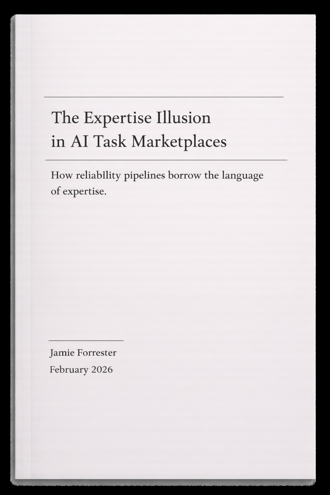
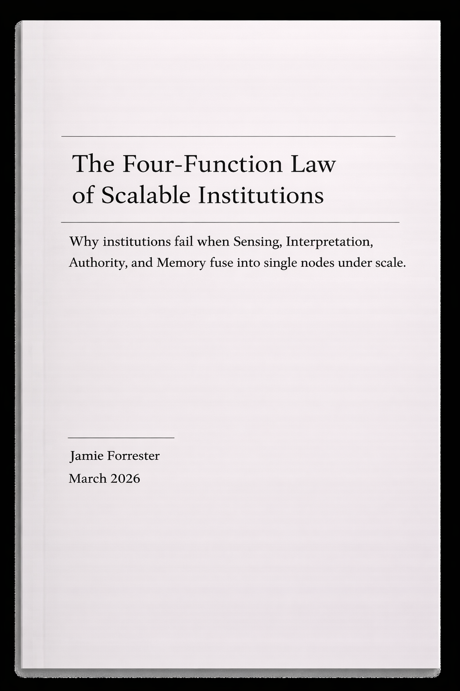
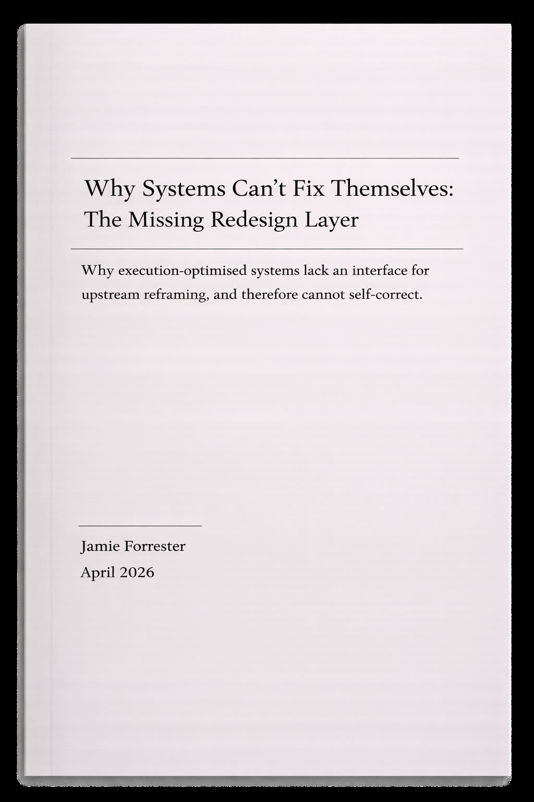

Diagnosis before redesign.
Recurring failure is rarely caused by one bad decision or a lack of effort. When the same outcome keeps returning despite correction, the problem usually sits in the structure producing it. This method is designed to locate that break, explain why previous fixes have not held, and determine what must change.
Not more commentary. One structural explanation that leadership, operators and builders can all act on.
The work begins where symptom-level explanation stops being enough, and ends with a written diagnosis that holds up as it travels through the organisation.
When correction keeps failing.
- ✓The same failure returns despite repeated correction.
- ✓Reform programmes stall at the same structural boundary.
- ✓A platform, regulator, or inherited architecture cannot be changed directly.
- ✓Workarounds have become load-bearing.
- ✓Builders are making design decisions while implementing.
The 60-Second Scan: the entry point.
Four questions to help recognise a possible structural problem before you send a brief. A first-pass screen, not a diagnosis. If the answers are hard to state, that is useful signal in itself.
Run the scan first. Send the brief second.
RUN THE SCAN →Nine failure classes. 54 subtypes. No classification without evidence.
The taxonomy gives recurring failures a consistent classification instead of treating each case as unique. Nine classes locate the kind of structural break; 54 subtypes identify the specific mechanism. Each has formal inclusion, exclusion and refusal criteria, and a class is assigned only where the evidence supports it.
How recurring-failure diagnosis works: the seven-step sequence
Define the system properly
Identify the system actually under analysis: its real boundary and scope, the systems around it, and where the work really happens. Team and department names often describe the surface, not the structure. This comes first: a diagnosis of the wrong system isn’t a partial diagnosis. It’s a different one.
Identify the primitive and governing rules
Name the primitive, the basic unit of work the system is organised around, and the rules that must actually hold for it to work, not just what the policy says. A broken rule can only be found once the governing rule is named.
Trace the failure path
Follow where the rules become real and where they fail: interfaces, handoffs, decision points, and the places the burden moves to, including people quietly holding the system together. The break is rarely where it first appears.
Form the governing diagnosis
The central step. The governing diagnosis is the explanation the evidence supports: the one claim that, if correct, explains why previous fixes haven’t held and what must change first. It separates what seems to be failing from what’s actually producing the failure. Everything else in the artifact leads to it or follows from it.
Make the stakes legible
Make the cost of the failure visible: operational, human, financial, coordination, and the risk that compounds over time. Cost that stays vague keeps being absorbed, and never drives a structural decision.
Confirm the diagnosis
You review the Diagnostic Artifact, then confirm it in writing, ask questions or challenge a finding. On a Full engagement, the redesign starts only after your confirmation and takes a further 14 days. A redesign built on an unconfirmed diagnosis would be speculation.
Produce the artifact
The agreed written work: a Diagnostic Artifact on its own, or, in a Full engagement, four linked documents built from the confirmed diagnosis:
- Translation Artifact: shared language layer for leadership, operations, and non-specialist audiences
- Diagnostic Artifact: governing diagnosis, evidence base, and build map
- Redesign Executive Summary: a board-level summary of the specification that can circulate more widely than the full blueprint
- Full Redesign Artifact: the restricted written blueprint for the replacement structure: the corrected primitive, target boundary, transition sequence, dependency order, interface and handoff changes, refusal rules, recapture gates, and builder handoff
Proof Standard
The same pressure applied to different systems produces different responses. The proof standard determines what holds.
Every diagnostic claim must survive the following test: if the system were stressed at the point of claimed failure, would the structural break appear where it is said to appear? A claim that cannot survive scrutiny does not belong in the artifact. A plausible-sounding diagnosis that is wrong is actively harmful.
- It must name a structural condition, not a symptom, not a behaviour
- It must locate the break precisely, not "communication" or "culture"
- It must explain why prior fixes have not held
- It must survive the removal test: if corrected, does the failure pattern change?
- It must be falsifiable: if it cannot be wrong, it is not diagnostic
- A pattern that matches without locating a structural cause
- An inference unsupported by the material in scope
- A claim that renames the symptom without naming the break
- A redesign produced before the diagnosis is confirmed
- A conclusion the system's owner already held before the work began
When diagnosis cannot be completed: Sometimes the available material is not sufficient to produce a diagnostic conclusion that can hold under scrutiny. The failure pattern may be too ambiguous, the system boundary too contested, or the material too thin. In these cases, I will say so rather than produce an artifact that appears complete but is not. Refusal is part of the method, not a failure of it.
Redesign sequence
Redesign is not produced by brainstorming solutions against a problem statement. It follows from the confirmed diagnosis. The sequence is non-negotiable. Each stage depends on the one before it.
What the artifacts contain
A Diagnostic Artifact names the recurring structural break. A Full Structural Engagement carries the confirmed diagnosis into four linked documents, each written for a different reader.
Translation Artifact
For leadership, operations and non-specialists
- Plain-language explanation of the structural failure
- Shared vocabulary across leadership, operations, and non-specialist roles
- Accessible explanation of the governing diagnosis
- Why prior fixes have not held
- Plain-language summary of the replacement direction
- Audience routing guidance: who reads what and where to go next
Diagnostic Artifact
The governing diagnosis and build map
- A clear definition of the system under analysis
- A structural view of how work actually flows
- The primitive and governing rules
- The key interfaces and failure path
- The distinction between stated and actual problem
- The governing diagnosis
- The present and future cost of the failure
- What must change first, and what depends on what
Redesign Executive Summary
For the board and decision owners
- Board-level replacement logic
- Corrected primitive
- Minimum valid replacement conditions
- Fake-progress tests
- Proof standard and consequence of deferral
- Dependency order in plain terms
Full Redesign Artifact
Restricted · the builder’s blueprint
- The corrected primitive: what the new structure is organised to do
- Target boundary: what the new structure covers, and what stays outside it
- Transition sequence: the order the changes must happen in
- Dependency order: which changes rely on others being done first
- Interface and handoff changes across teams, systems and contracts
- Refusal rules: what the new structure must never allow
- Recapture gates: checks that stop the old pattern coming back
- Builder handoff: the requirements your team or partner builds from
Need an architecture mapped rather than a failure diagnosed? That’s the Structural Lens Brief, a separate 6–10 page brief.
How I produce the work
The work is architecture-led. The frameworks, structural distinctions, diagnostic logic, and conclusions are mine. AI assists drafting and production. It helps me work more clearly and efficiently. In a Full Structural Engagement, AI may also assist with consistency checking across all four artifacts. It does not decide what is being diagnosed, which rule is breaking, or what must change first, and does not determine the final recommendations in any artifact.
Every artifact is reviewed before delivery. The structural conclusions are mine. The diagnostic sequence, governing laws, and correction order are not delegated to AI, pattern-matching, or probabilistic inference. If a claim cannot survive scrutiny, it does not belong in the artifact.
Client materials are only processed in business-tier AI tools that do not train on client data, with names and personal details removed wherever possible. They are deleted within 30 days of the engagement closing.
- Drafting and refining prose
- Organising material into usable forms
- Testing phrasings and structures
- Structuring large volumes of background material
- Determine the governing diagnosis
- Decide the redesign boundary or correction order
- Generate the structural laws the work applies
- Replace review, judgment, or accountability
The research behind the method
The method is grounded in 10 published research papers and the complete Diagnostic Taxonomy. The published papers define the structural laws the method applies: primitive mismatch, function collapse, burden transfer, the missing redesign layer, institution migration, replacement pipeline construction, admissibility conditions, governed correction sequences, host-constrained primitive compression, and kernel reduction. The taxonomy provides the shared classification standard: nine failure classes, fifty-four subtypes, with formal inclusion, exclusion, and refusal criteria.
The papers are not the method. They are the public form of the structural laws the method is built on. The artifacts are the applied form of those laws within a bounded system.

Paper 01 · Structural mismatchThe Expertise Illusion in AI Task MarketplacesView paper →
Paper 02 · Concentrated burdenThe Four-Function Law of Scalable InstitutionsView paper →
Paper 03 · The redesign layerWhy Systems Can’t Fix Themselves: The Missing Redesign LayerView paper →Send the repeated failure. Not the proposed fix.
The five-line brief. No diagnosis yet. Just the signal.
Describe the problem. Send the Five-Line Brief for a recurring failure, or contact me about a Structural Lens.
Establish fit. I review the initial problem and scope. Qualification is free; it is not a diagnosis.
Agree the work. If suitable, we agree the fixed fee, evidence requirements and written deliverable before paid work begins.
- 01What keeps going wrong?
- 02What is it costing? Money, time, trust, load, or drift.
- 03Where does it show up? Teams, roles, systems, or touchpoints.
- 04What has already been tried?
- 05What cannot change? Non-negotiables and constraints.
If the work is not the right fit, I will say so.
Need an architecture mapped rather than a failure diagnosed? Ask about a Structural Lens Brief.